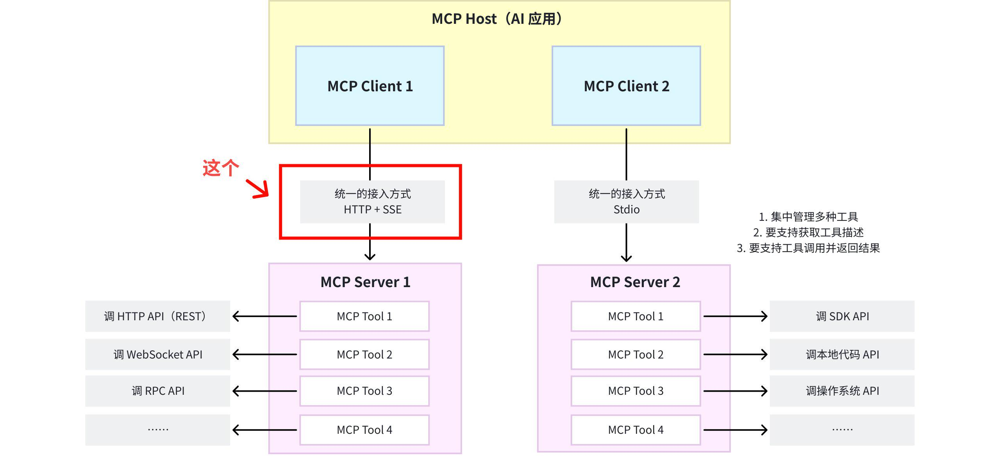
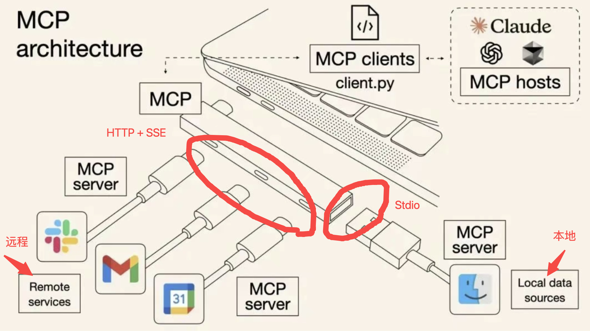

两种标准传输
正在读取本章记录下次复习：—
请通过“启动学习站.cmd”进入，才能写入数据库。

13.1 stdio
stdio 用于同一机器上的进程通信：
- Client 启动 Server 子进程；
- Client 向 Server 的
stdin写入 MCP JSON-RPC 消息； - Server 从
stdout返回 MCP JSON-RPC 消息； stderr可用于日志。
flowchart LR
H[Host / Client] -->|子进程 stdin| S[MCP Server]
S -->|子进程 stdout| H
S -.日志 stderr.-> L[日志系统]重要约束：
- 每条消息使用 UTF-8；
- 消息按换行分隔，消息内部不得包含实际换行分隔符；
- Server 不能把普通日志写入 stdout，否则会破坏协议流；
- stdio 配置中的命令和环境变量相当于本地代码执行能力，必须信任来源。
stdio 被选择不是因为它功能最丰富，而是因为它：
- 所有主流操作系统和语言都支持；
- 无需占用端口；
- 子进程生命周期容易由 Host 管理；
- 不需要额外网络服务；
- 非常适合本地开发工具。
13.2 Streamable HTTP
Streamable HTTP 是标准远程传输。Server 提供一个同时支持 POST 和 GET 的 MCP endpoint，例如：
https://example.com/mcp
核心行为：
- Client 用 HTTP POST 发送 JSON-RPC 消息；
- Server 可返回
application/json单一响应； - Server 也可返回
text/event-stream，通过 SSE 发送多个消息； - Client 可用 GET 打开 SSE 流，接收 Server 主动请求和通知；
- Server 可通过
Mcp-Session-Id管理有状态会话； - HTTP 授权遵循 MCP Authorization 规范。

13.3 HTTP+SSE 与 Streamable HTTP
旧的 HTTP+SSE 传输来自 2024-11-05 协议版本，已被 Streamable HTTP 取代。二者的关键差异不是“文本与二进制”，而是连接模型被简化：
- 旧方案通常使用独立 SSE endpoint 与 POST endpoint；
- 新方案使用单一 MCP endpoint，POST/GET 组合；
- 每个 POST 请求可直接获得 JSON 响应，也可开启 SSE 流；
- 更容易支持无状态基础 Server、有状态会话和反向通知。
13.4 一个重要纠错：Streamable HTTP 不等于任意二进制协议
MCP 当前仍使用 UTF-8 JSON-RPC 消息。工具返回图片或音频时，是通过 MCP 内容块表示，例如 base64 数据或资源链接，而不是因为 Streamable HTTP 自动变成了任意二进制 RPC。
HTTP/2/3 也不是 MCP Streamable HTTP 的必要定义条件。HTTP/1.1 配合 SSE 同样可以实现规范要求。
13.5 自定义传输
MCP 允许可插拔的自定义传输，但必须保留 MCP 的 JSON-RPC 消息格式和生命周期语义。自定义传输解决特定环境问题，却会降低通用互操作性，因此应谨慎使用。